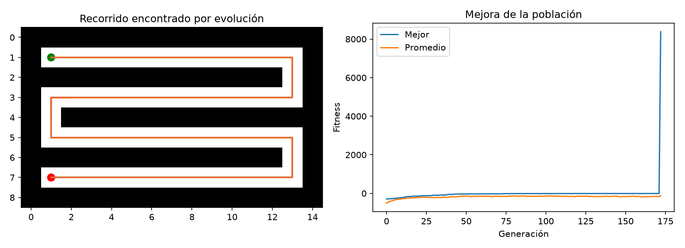

UNIDAD 1 / EVIDENCIA DE EJECUCIÓN2026-11-20T16:34:45.969810-06:00 · 4.50 s · EJECUTADO · código de salida 0
Comando ejecutado
python 08-talleres/04-algoritmos-evolutivos/laberinto.py
Salida de la ejecución
Generación 0: fitness=-289.40; meta=False
Generación 10: fitness=-217.90; meta=False
Generación 20: fitness=-143.70; meta=False
Generación 30: fitness=-98.30; meta=False
Generación 40: fitness=-54.90; meta=False
Generación 50: fitness=-31.70; meta=False
Generación 60: fitness=-25.70; meta=False
Generación 70: fitness=-24.70; meta=False
Generación 80: fitness=-12.10; meta=False
Generación 90: fitness=-12.10; meta=False
Generación 100: fitness=-11.10; meta=False
Generación 110: fitness=-10.10; meta=False
Generación 120: fitness=-9.10; meta=False
Generación 130: fitness=-8.10; meta=False
Generación 140: fitness=-8.10; meta=False
Generación 150: fitness=-8.10; meta=False
Generación 160: fitness=-8.10; meta=False
Generación 170: fitness=-8.10; meta=False
Generación 172: fitness=8382.00; meta=True
Meta alcanzada en generación 172; movimientos válidos=142; distancia óptima BFS=54.
BFS solo calculó distancias de evaluación. La secuencia fue producida por selección, cruce y mutación.
Salida completa: 08-4-evolutivos.txt · SHA-256 del código: c22c9daaaed59e8110ca…

laberinto.png · archivo generado por la prácticaCaptura del reporte HTML construido a partir de la ejecución real. Consulta el código, el TXT y registro_ejecuciones.json para reproducirla.